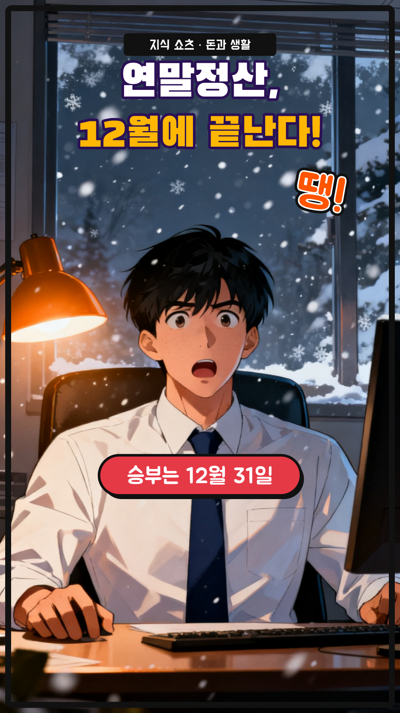
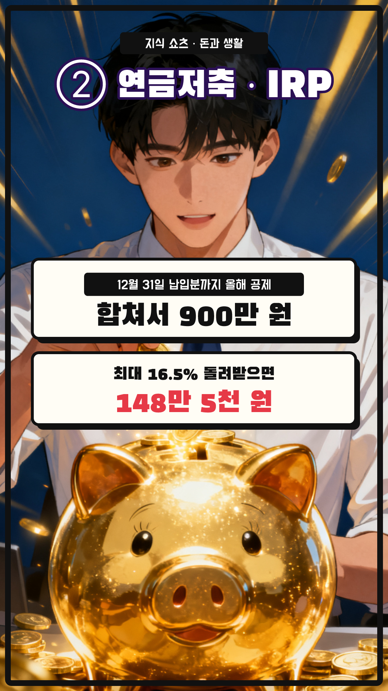
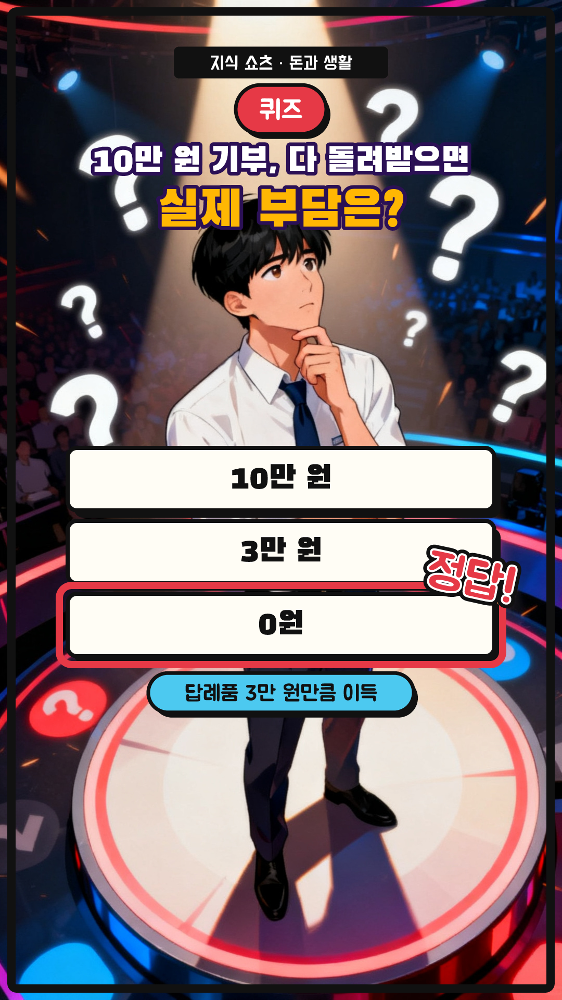
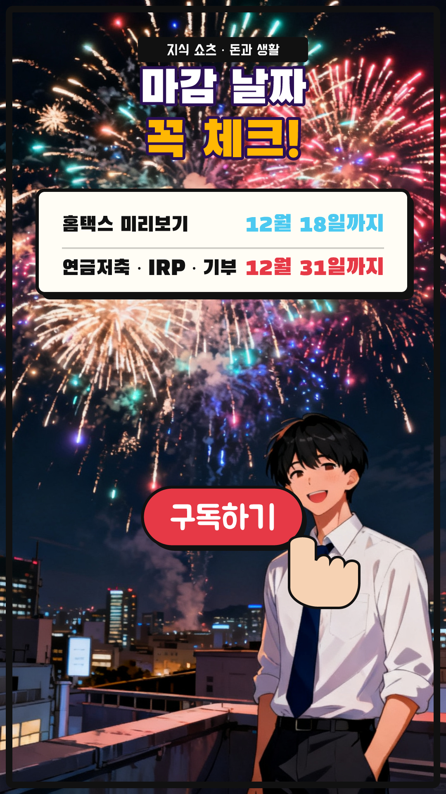

연말정산, 12월 안에 해야 할 것 — 7컷 콘티
54초 (+ 썸네일 1초) · 1080×1920 · 30fps · 자막 카드 y=1480 · 내레이션 ko-KR-Chirp3-HD-Charon · 웹툰풍 액션 세미리얼 AI(Seedream 4.0) + 말풍선 · 효과음

S01
0:00–0:06 · 6.6초
모션
ai 카메라 이동 0.0s, title 팝 0.0s, sfx 도장 1.9s, flip 도장 2.4s
내레이션
연말정산은 1월에 하는 거 아니에요? / 사실 승부는 12월 31일에 끝나요 / 1월엔 이미 쓴 돈을 정리만 하거든요
S02
0:06–0:15 · 9.200000000000001초
모션
ai 카메라 이동 0.0s, title 팝 0.0s, how 와이프 ↓ 3.9s, tip 팝 6.8s
내레이션
첫째, 12월 18일까지 열리는 홈택스 연말정산 미리보기 / 9월까지 쓴 카드값으로 예상 환급액을 보여 줘요 / 토해낼 것 같으면 아직 손쓸 시간이 있죠

S03
0:15–0:24 · 8.8초
모션
ai 카메라 이동 0.0s, title 팝 0.0s, limit 팝 0.6s, back 팝 5.4s
내레이션
둘째, 연금저축과 IRP는 12월 31일까지 넣은 돈만 올해 공제예요 / 합쳐서 900만 원까지, 최대 16.5%를 돌려받아요
S04
0:24–0:31 · 7.199999999999999초
모션
ai 카메라 이동 0.0s, title 팝 0.0s, flow 와이프 → 2.2s, gift 도장 5.1s
내레이션
셋째, 고향사랑기부제 / 10만 원을 내면 10만 원을 세금으로 돌려받고 / 3만 원어치 답례품까지 받아요
S05
0:31–0:35 · 3.599999999999998초
모션
ai 카메라 이동 0.0s, title 팝 0.0s, cond 팝 0.4s
내레이션
단, 내야 할 세금이 있어야 돌려받을 수 있어요

S06
0:35–0:45 · 9.600000000000001초
모션
ai 카메라 이동 0.0s, badge 팝 0.0s, question 팝 0.3s, choices 팝 0.9s, answer 도장 4.9s, why 페이드 7.4s
내레이션
퀴즈! 고향사랑기부로 10만 원을 내고 다 돌려받으면 실제 부담은? / 정답은, 부담 0원이에요! / 오히려 답례품만큼 이득이죠

S07
0:45–0:54 · 9.0초
모션
ai 카메라 이동 0.0s, look 팝 0.2s, dates 팝 0.6s, button 팝 3.3s, finger 탭 3.9s
내레이션
연금저축 입금과 기부는 12월 31일이 마감이에요 / 더 많은 돈 이야기가 궁금하다면 구독해 주세요